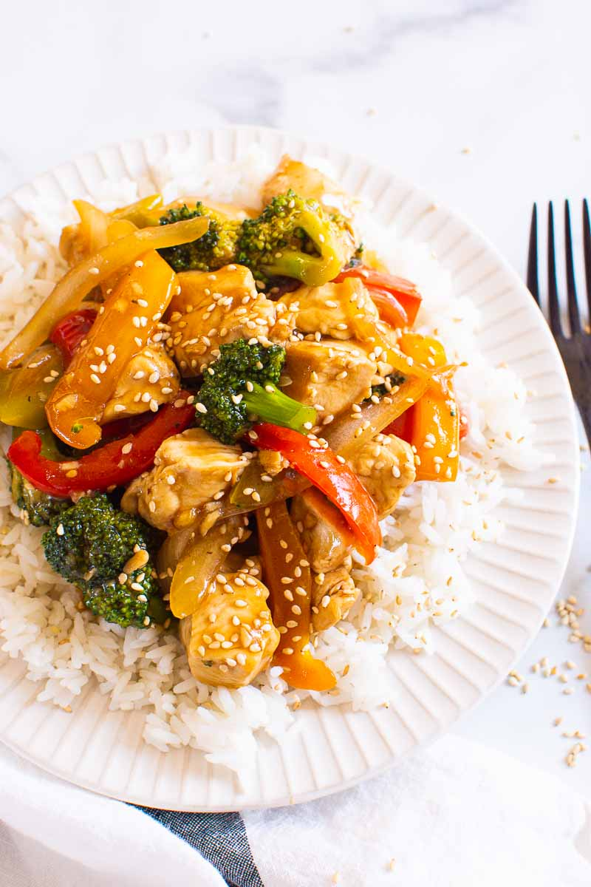

Chicken Stir Fry

A classic and easy-to-make dish
Chicken stir fry is a delicious and quick meal. Featuring pan fried chicken mixed
with vegetables and covered in a special hand-made stir-fry sauce this dish is
both easy to prepare and quick to cook.
Great for a family dinner, social potluck, or even meal prepping for a week's worth
of lunches, chicken stir fry is one of my favourite dishes to make.
Ingredients
- 1.25 lbs. boneless chicken breast
- 1 large white onion
- 2 large bell peppers
- 1 lb. broccoli
- 3 garlic cloves
- 1 inch of ginger
- 1 3/4 cups of low-sodium chicken stock
- 1/4 cups soy sauce
- 2 tbsp. honey
- 1 tbsp. rice vinegar
- 3 tbsp. cornstarch
- 1 tbsp. sesame seeds
- 2 tbsp. olive oil
Steps
- Slice the onion, bell peppers, and chicken into thin slices, and chop
the brocolli into bite-sized pieces.
- Mice the garlic and ginger.
- In a medium bowl, add chicken stock, soy sauce, honey, rice vinegar,
cornstarch, garlic, and ginger. Whisk together.
- Preheat 1 tablespoon in a large skillet or wok on medium heat.
Place sliced chicken into the pan/wok. Cook unconvered for 3 minutes
per side stirring sparingly
- Remove chicken from pan and set it aside. Set the heat to high and add
1 more tablespoon of olive oil. Add sliced onions and bell peppers to
the pan. Cook for 2 minutes, stirring sparingly.
- Return heat to medium; remove the onions and bell peppers from the pan
and place them to the side.
- Add the brocolli to the pan, whisk sauce once again to ensure no cornstarch
is stuck to the bottom of the bowl. After whisking, add the sauce to the
pan.
- Let the sauce come to a boil, stirring constantly. Cook until the sauce is
thickened.
- Once the sauce is thickened, return the cooked chicken, onions, and bell
peppers to the pan, mixing them into the sauce. Turn off the heat
- Garnish with sesame seeds, and serve alone or over rice.